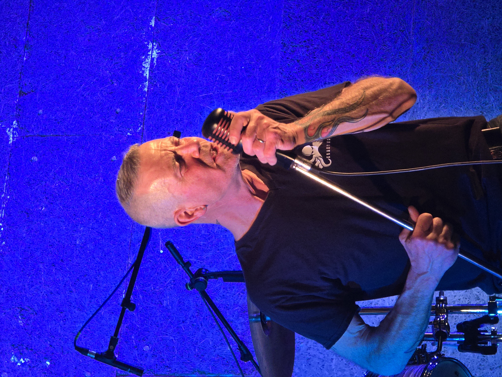

Né en 1970, Glyn n'a jamais prévu de monter sur scène. C'est presque par accident qu'il découvre sa voix en 1994 — devant 300 personnes stupéfaites. Ce baptême du feu inattendu lui vaut d'être immédiatement repéré par un groupe naissant : les Blind Runners. Pendant plus d'une décennie, il écume avec eux les pubs de Lyon tous les quinze jours, interprétant avec une gouaille naturelle les classiques du rock, du blues et du funk, avec une tendresse particulière pour les Rolling Stones.
Après la séparation des Blind Runners en 2007, Glyn s'éloigne des scènes pendant dix ans — sans jamais vraiment lâcher la musique. En novembre 2016, il repart de zéro avec Glyn le groupe, un retour aux sources à travers les grands classiques du rock et du blues.
En janvier 2019, Glyn franchit une nouvelle étape et fonde Les Krakens. Le groupe ne se contente plus de reprises : il les réinvente, les tord, les électrise à sa propre sauce — et commence à composer ses propres morceaux. Bob rejoint l'aventure la même année. En février 2022, l'arrivée de Phil marque le tournant metal du groupe. En septembre 2025, Ned vient compléter la formation à la basse. Une bête de scène est née.
Repères
Born in 1970, Glyn never planned to be a frontman. It was almost by accident that he found his voice in 1994 — standing in front of 300 people who had no idea what was about to hit them. The Blind Runners spotted him immediately. For over a decade, he performed every two weeks with raw, natural charisma and a special fondness for the Rolling Stones.
When the Blind Runners split in 2007, Glyn stepped back for ten years. In November 2016, he started fresh with Glyn le groupe, a return to rock and blues classics.
In January 2019, Glyn founded Les Krakens. The band stopped merely covering songs and started reshaping them with its own identity. Bob joined the same year. In February 2022, the arrival of Phil marked the band's metal turning point. Then in September 2025, Ned completed the lineup on bass. The monster had awakened.
Timeline